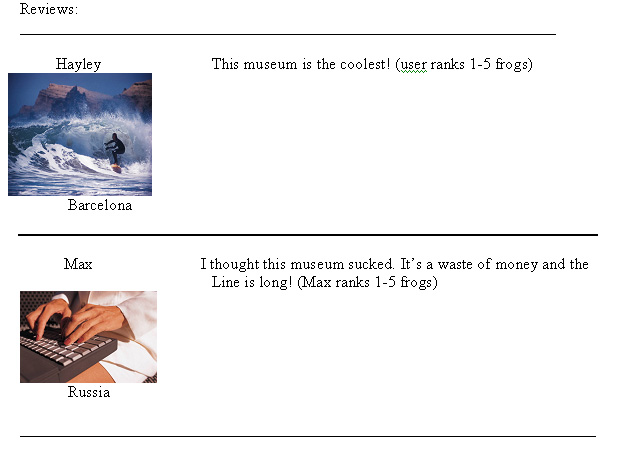

<PRE>
Culture Tab Fields

	Museums
	Parks
	Festivals
	Day Trips
	Live Cultural Performances
	Churches
	Places of Interest
	Shops

The Culture Reviews should look something like this:

Museum: Pablo Picasso Museum
Address: 1234 Barrio Gotico
Cost: Free
Dates: Open Year Round (if it's a specific festival or live performance, 
the student will enter the exact date).
Average Rate: (1-5 frogs) 
(When each user posts a comment on the Museum they should be able to give it a 1-5 frog rate. 
This should factor into the average rate at the top with the museum's main info.)
